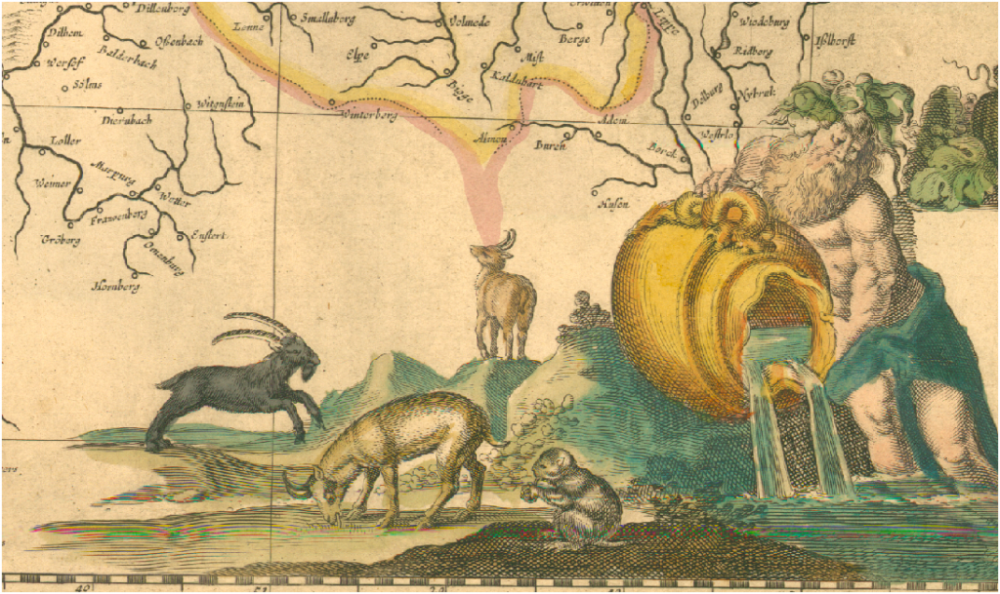
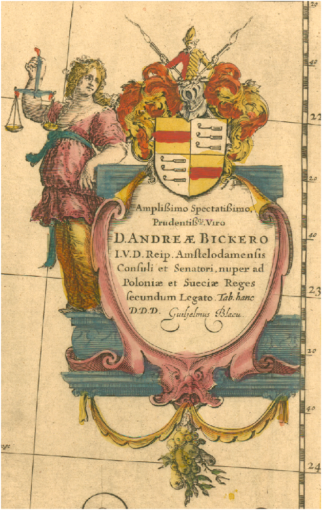
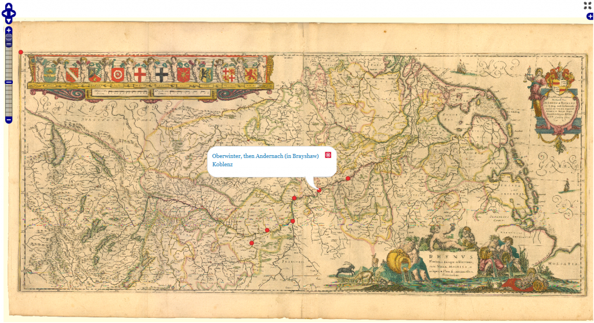
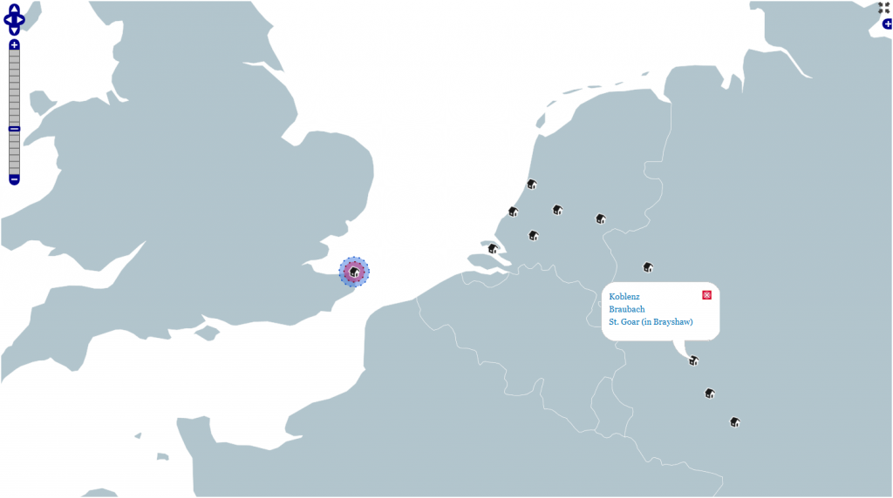
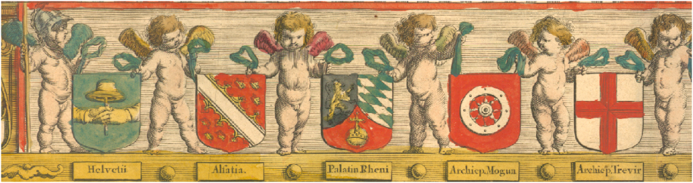

Tomorrow I’ll be demoing my Stanford Spatial Drupal distribution for some Stanford folks and David Rumsey. The demo includes an unrectified map of Germany around the Rhine from the 16th century that, shockingly, does not come from Rumsey’s amazing collection. The Drupal distribution gives users the ability to place their locations not only on the world as understood by modern geography–underwritten by satellites and shuttles and oil-and-war-fueled GIS technology–but also the world as it was described in the past, embellished with images of goats and cherubs and musket-firing swashbucklers.

Placing historical events on contemporary maps does more than just remind us of that the actors thought of their world differently, it also provides us with a series of shared coordinates that can be used to georectify the map.

The locations and map are served using Drupal 7's OpenLayers plugin but stored in the native coordinate system of the digital image.

The same locations presented on a traditional, modern map, also served using Drupal's OpenLayers module.
Under the hood, each location node has two geofield-formatted entries, one for the traditional lat-long coordinate system and one for the xy coordinates of the map. This allows the scholar to store information about the node (or, in the case of the weak event model in use in this system, an annotated interrelation between nodes known as an “event”) without duplicating effort or preferencing one representation of reality over another.

I’ll post a more detailed explanation of this distribution, its uses and how to integrate the various modules once I get it into a more finished state. Suffice to say, Drupal 7 provides a very decent platform for serving spatial data and assisting spatially-oriented collaborative scholarship.